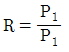
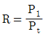
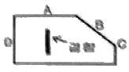
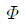
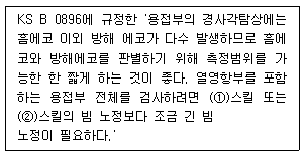

초음파비파괴검사기능사 (2006-04-02 기출문제)
1과목: 초음파탐상시험법
1. 음향 임피던스란?
- 일반적으로 초음파가 물질내를 진행할 때 빨리 진행하게 하는 것을 말한다.
- 초음파가 물질내에 진행하는 것을 방해하는 저항을 말한다.
- 초음파가 매질을 통과하는 속도와 물질의 밀도와의 차를 말한다.
- 공진값을 정하는데 이용되는 파장과 주파수의 곱에 관한 함수이다.
(정답률: 알수없음)

2. 저주파수의 음파를 얇은 물질의 초음파탐상시험에 잘 사용하지 않는 가장 큰 이유는?
- 저주파의 음파는 감쇠가 빨라서
- 불완전한 음파이기 때문에
- 표면하의 분해능이 나쁘기 때문에
- 침투력의 감쇠가 빨라 효율성이 강화되므로
(정답률: 70%)
3. Pr을 반사파 응압, Pi를 입사파 응압, R을 반사 계수라 할 때 이들의 관계를 옳게 나타낸 식은?
- R=Pr-Pi

- R = Pr + Pi

(정답률: 50%)
4. 와전류탐상검사를 수행할 때 시험부위의 두께 변화로 인한 전도도의 영향을 감소시키기 위한 방법은?(문제 원본 오류로 1, 2번 보기가 같습니다. 정답은 2번입니다. 정확한 보기 내용을 아시는분 께서는 오류 신고를 통하여 1, 2번 보기 내용 작성 부탁 드립니다.)
- 전압을 감소시킨다.
- 시험 주파수를 감소시킨다.
- 시험 주파수를 감소시킨다.
- fill-factor(필 펙터)를 감소시킨다.
(정답률: 알수없음)
5. 황산리튬 진동자에서의 송∙수신 효율 특성은?
- 송신효율이 티탄산바륨 진동자보다 높다.
- 송신효율이 수정 진동자보다 낮다.
- 송신효율은 티탄산바륨 진동자와 수정 진동자와의 중간이나 수신효율은 가장 뛰어나다.
- 송신, 수신효율이 티탄산바륨 진동자와 수정 진동자보다 높다.
(정답률: 64%)
6. 수침법에 가장 널리 사용되는 일반적인 접촉 매질은?
- 물
- 기름
- 알콜
- 글린세린
(정답률: 알수없음)
7. 초음파탐상시험에서 소거장치(Reject)에 관한 설명으로 틀린 것은?
- 시간 축에서 잡음신호를 제거한다.
- 장치의 증폭 직선성에 영향을 미친다.
- 장치의 작동범위를 변화시킨다.
- 작은 에코를 더 크게 하므로 결함평가에 더 좋다.
(정답률: 알수없음)
8. 자분탐상시험 원리에 대해 기술한 것으로 올바른 것은?
- 비자성체의 시험체에 자숙을 흐르게 하는 작업을 자화라 한다.
- 자분은 여러 가지 색을 지니고 있는 비자성체의 미립자이다.
- 자분을 시험체 내에 침투시키는 작업을 자분의 적용이라한다.
- 결함부에 끌러 형성된 결함자분모양을 찾아내는 작업을 관찰이라 한다.
(정답률: 60%)
9. 다음 중 침투탐상 시험시 잉여 침투액을 용제세척하고 현상 처리 후 건조처리를 해야 하는 현상법은?
- 건식현상법
- 무현상법
- 속건식현상법
- 습식현상법
(정답률: 50%)
10. 탐측자의 주파수가 높을 때 나타나는 현상으로 맞는 것은?
- 감도는 줄고 투과력은 커진다.
- 빔의 감쇠가 줄어 투과력이 커진다.
- 빔 분산은 줄고 강도와 분해능은 커진다.
- 빔 분산과 침투력이 모두 커진다.
(정답률: 63%)
11. 220kv로 강과 동을 촬영한 방사선투과 등가인자가 각각 1.0, 1.4일 때 0.5인치 동판을 촬영하려면 몇 인치 강의 촬영 노출시간과 같아야 하는가?
- 0.7 인치 강
- 0.5 인치 강
- 1.4 인치 강
- 1.0 인치 강
(정답률: 50%)
12. 음향 임피던스(Z)는 매질의 밀도와 속도(c)의 관계로 나타낼 수있다. 이 관계를 바르게 표시한 식은?
- Z=P+C
- Z=P÷C
- Z=P-C
- Z=P×C
(정답률: 65%)
13. 굴절각 70° 로 STB-AT에 교정하여 덧붙임 없는 강재 용접부 두께 20mm를 탐상했더니 빔 진행거리 90mm 지점에서 결함 에코가 나타났다. 탐촉자 위치에서 이 용접부의 결함 깊이는?
- 0.2mm
- 11.2mm
- 13.2mm
- 15.2mm
(정답률: 알수없음)
14. 비파괴시험의 안전관리에 대한 기술로 올바른 것은?
- 방사선의 사용은 근로안전위생법, 산업안전보건법 등으로 규제되고 있고 이에 따르면 아무나 취급해도 좋다.
- 방사선투과시험에서 취급하는 방사선이 강하지 않은 경우에는 안전면에 특히 유의할 필요가 없다.
- 초음파탐상시험에서 취급하는 초음파가 강력한 경우에는 유자격자에 의한 안전관리 지도가 의무화되어 있다.
- 침투탐상시험의 세정처리 등에 의한 ??의 경우에는 환경보건에 주의한다.
(정답률: 알수없음)
15. 초음파탐상기에서 이득(gain) 손잡이를 이용하여 어떤 에코의 높이를 6dB 내렸을 때 이 에코 높이의 변화는?
- 처음 에코의 1/4로 내려간다.
- 처음 에코의 1/2로 내려간다.
- 처음 에코의 2배로 올라간다.
- 처음 에코의 4배로 올라간다.
(정답률: 알수없음)
16. 지연에코가 전체 스크린 높이의 40%에서 80%로 높여 탐상 하고자 한다면 데시벨(dB)양은 얼마나 조작해야 하는가?
- 4dB
- 6dB
- 8dB
- 10dB
(정답률: 알수없음)
17. A스캔의 장비의 화면에서 저면 반사파의 강도(응압)를 나타내는 것은?
- 반사파의 거리
- 반사파의 밝기
- 반사파의 폭
- 반사파의 높이
(정답률: 46%)
18. 내부 기공과 같은 결함 검출에 가장 적합한 비파괴 검사는?
- 음향방출시험
- 반사파의 밝기
- 반사파의 폭
- 반사파의 높이
(정답률: 알수없음)
19. 다음 중 종파와 횡파가 동시에 존재할 수 있는 물질은?
- 물
- 공기
- 오일
- 아크릴
(정답률: 알수없음)
20. 일반적으로 다음 중 분해능이 가장 좋은 주파수는?
- 10MHz
- 5MHz
- 2MHz
- 1MHz
(정답률: 65%)
2과목: 초음파탐상관련규격
21. 그림과 같이 결함이 존재할 때 수직탐상법으로 결함을 가장 잘 검출할 수 있는 탐촉자의 위치는?

- A
- B
- C
- D
(정답률: 50%)
22. 수침법으로 두께 80mm강재를 수직탐상할 때 CRT화면상에 시험재 1차지면 반사파가 2차 표면반사파 앞에 나타내고자 할 때 거리로 옳은 것은? ( 단, 물에서의 종파속도는 1.500m/s 이고, 강에서의 종파 속도는 6.000m/s이다)
- 10mm
- 15mm
- 20mm
- 25mm
(정답률: 알수없음)
23. 매질에서 입자의 운동방향이 파의 진행방향과 같을 때 이 매질로 진행하는 파의 형태는?
- 종파
- 횡파
- 표면파
- Lamb파
(정답률: 알수없음)
24. 시험제에서의 거리를 신속하게 측정하기 위해 탐상기의 스크린상에 나타내는 눈금을 무엇이라 하는가?
- 송신펄스
- 시간축
- 마커
- 투과도계
(정답률: 알수없음)
25. 반사된 빔(beam)을 검출하여 분석하고 결함의 길이 및 위치를 알아낼 수 있는 비파괴검사법은?
- 누설시험
- 굽힘시험
- 초음파탐상시험
- 전자유도검사시험
(정답률: 70%)
26. KS B 0831에서 초음파 탐상용 G형 표준시험편의 검정조건 및 방법 설명으로 맞는 것은?
- 주파수는 2(또는 2.25), 5 및 10Mhz
- 리젝션의 강도는 0 또는 온(ON)으로 한다.
- 반사원은 R100면으로 한다.
- 측정방법은 결정용 기준편에만 1회 실시한다.
(정답률: 70%)
27. KS B 0817의 펄스반사법에 따른 초음파탐상 시험방법동칙의 의거 탐상도형을 표시하는 기본기호와 설명이 틀리게 된 것은?
- 측면 에코 : W
- 표면 에코 : S
- 송신 펄스 : T
- 흠집 에코 : E
(정답률: 70%)
28. KS B 0896에 규정된 경사각탐상장치의 조정 및 점검시 영역 구분을 결정할 때 에코높이의 범위가 M선을 초과하고 H선 이하이면 에코높이는 어떤 영역에 속하는가?
- Ⅰ영역
- Ⅱ 영역
- Ⅲ 영역
- Ⅳ 영역
(정답률: 59%)
29. KS B 0897의 알루미늄 맞대기 용접부의 초음파 경사각 탐상시험 방법에서 탐상기의 사용 조건을 틀리게 설명한 것은?
- 증폭직선성은 측정하여 ±3%로 한다.
- 신간축의 직선성은 측정하여 ±1%로 한다.
- 감도 여유값을 측정하여 40dB 이상으로 한다.
- 사용조건의 확인은 장치의 사용 개시시 및 2년마다 확인한다.
(정답률: 알수없음)
30. KS B 0897에서 시험결과의 분류시 모재 두께 1가 20mm초과 80mm이하이고, 8종으로 구분될 때 흠의 분류가 1류였다면 흠의 지시길이는 얼마 이하일 때 인가?
- T/8
- T/6
- T/4
- T/2
(정답률: 60%)
31. KS B 0896에 규정된 강 용접부의 경사각 초음파탐상시험시 장치의 조정 및 점검을 위해 A2형계 표준시험편을 사용하여 에코높이 구분선을 작성하는 경우 시험편의 표준구멍 치수는?

1×1mm 2×2mm
2×2mm 3×3mm
3×3mm 4×4mm
4×4mm
(정답률: 60%)
32. KS B ⑤35에 의한 탐촉자 표시방법이 N3M10×10A70AL와 같이 되어 있었다. 여기서 AL이 의미하는 것은?
- 검사체 재질용 탐촉자
- 진동자 재질용 탐촉자
- 쐐기의 재질용 탐촉자
- 접촉 매질용 탐촉자
(정답률: 알수없음)
33. KS B 0831의 초음파 탐상용 표준시험편 중 수직탐촉자의 특성 측정에 사용되는 것은?
- N1형 STB
- G형 STB
- A1형 STB
- A2형 STB
(정답률: 31%)
34. KS B 0896에 따른 초음파탐상 시험 결과의 분류 방법에 관한 사항을 설명한 것 중 틀린 것은?
- 흠에코 높이의 영역과 흠의 지시길이에 따라 1~4류로 분류한다.
- 맞대기 용접에서 맞대는 모재의 판 두께가 다른 경우가 있을 때는 얇은 쪽의 판 두께를 기준으로 한다.
- 동일하다고 간주되는 깊이에서 연속한 흠의 간격이 큰 흠의 길이보다 짧으면 흠의 사이의 간격까지 포함하여 연속한 흠으로 한다.
- 2방향에서 탐상한 경우에 동일한 흠의 분류가 다를 때는 상위 분류를 채용한다.
(정답률: 20%)
35. KS B ⑤35에 의한 탐촉자의 표시기호가 N5Z10x10A70일 때 다음 중 그 의미가 옳은 것은? (단, 보통주파수로서 경사각탐상임)
- 5MHz. 수정. 10x10(높이x폭). 굴절각 70˚
- 5MHz. 티탄산바륨. 10x10(높이x폭). 공횡각 70˚
- 5MHz. 지르콘. 10x10(높이x폭). 수직
- 5MHz. 지르콘. 10x10(높이x폭). 굴절각 70˚
(정답률: 알수없음)
36. KS B 0817에 의한 초음파시험 결과의 평가시 고려할 대상 항목에 포함되지 않는 것은?
- 등가결함 위치
- 등가결함 지름
- 흠집의 지시길이
- 흠집의 넓이
(정답률: 알수없음)
37. KS B 0897에 규정된 시험편 중 표준시험편이 아닌 대비 시험편인 것은?
- STB -A1
- STB -A3
- STB - A31
- RB - A4AL
(정답률: 58%)
38. KS B 0896에 따른 탐상기에 필요한 성능을 설명한 것으로 틀린것은?
- 증폭 직선성은 ±3%범위의 성능 필요
- 시간축의 직선성은 ±1% 범위내
- 수직탐상 강도 여유값은 30dB 이하
- DAC 회로는 30dB 이상 보상 성능 필요
(정답률: 36%)
39. KS B ⑤35에 규정한 시험주파수를 측정하는 방법의 설명으로 틀린 것은?
- 측정한 시험주파수의 허용범위는 공칭주파수의 ±15%인 것이 바람직하다.
- 오실로스코프로 측정시 3파법은 3사이클의 시간을 구하고 역수를 주파수로 한다.
- 주파수 분석기로 측정시 시험주파수는 주파수가 낮은쪽과 높은 쪽의 평균치로 한다.
- 사용기재로는 오실로스코프, 탐촉자, 주파수분석기등이 사용된다.
(정답률: 42%)
40. ( ) 안에 알맞은 수치는?

- ① 0.1, ② 0.5
- ① 0.5, ② 1
- ① 1, ② 2
- ① 2, ② 4
(정답률: 알수없음)
3과목: 금속재료일반 및 용접일반
41. 인터넷에서 접속된 컴퓨터간에 전자우편 전송을 위해 사용하는 규약은?
- SNMP
- TOP/IP
- SMTP
- SLIP/PPP
(정답률: 24%)
42. 우리나라의 정보화 수준은 상당히 높은 수준에 있어 이에 걸맞게 사이버 공간에서 기본적인 예의와 윤리를 지켜야 한다. 이를 일컫는 용어는?
- 네티즌(Netizen)
- 네티켓(Netiquette)
- 스토커(Stocker)
- 인터넷원(Internet Worm)
(정답률: 알수없음)
43. 인터넷에 연결된 수많은 컴퓨터들은 각자 고유의 자기주소를 갖고 있다. 이 주소를 IP(Internet Protocol)주소라 하는데 이것은 몇 비트(bit)의 숫자로 이루어져 있는가?
- 4bit
- 8bit
- 16bit
- 32bit
(정답률: 17%)
44. 웹브라우저가 인터넷상의 서버에서 텍스트, 그림, 사운드, 동영상을 가져올 수 있도록 하는 프로토콜은?
- UDP
- HTTP
- HTP
- IP
(정답률: 알수없음)
45. 컴퓨터의 처리속도 단위가 점차 빠른 순으로 옳게 나열된 것은? (예 : fssms femto-second를 의미한다.
- ms → us → ns → ps → fs
- us → ns → ms → ps → fs
- ms → us → ns → fs → ps
- us → ns → ms → fs → ps
(정답률: 23%)
46. 면심입방(FCC)격자의 결정구조가 아닌 것은?
- Ag
- Al
- Au
- Cr
(정답률: 알수없음)
47. 탄소량을 약 0.8% 함유한 강은?
- 초공석강
- 아공석강
- 과공석강
- 공석강
(정답률: 알수없음)
48. 물체의 표면에 부착하여 변형을 측정하는데 사용되는 공구는?
- 다이얼 게이지
- 버이니어 게이지
- 마이크로 미터
- 스트레인 게이지
(정답률: 알수없음)
49. 보통의 금속은 응고할 때 수축하나 반대로 팽창하는 금속은?
- 인튬(In)
- 란탄(La)
- 비스무트(Bi)
- 세륨(Ce)
(정답률: 54%)
50. 니켈 36%, 크롬12%, 나머지는 철(Fe)로서 온도가 변해도 탄성률이 거의 변하지 않는 것은?
- 라우탈
- 엘란바아
- 퍼어말로이
- 진정강
(정답률: 알수없음)
51. 금속의 결정격자에서 공간격자는 무엇으로 구성되어 있는가?
- 원자
- 단위포
- 분자
- 엽상결정
(정답률: 31%)
52. 응축계인 금속은 대기입하에서 어떠한 인자를 무시하면 자유도 (F=C-P+1)를 변화시킬 수 있는가?
- 압력
- 상
- 농도
- 온도
(정답률: 알수없음)
53. 순철(α철)은 약 910℃ 이하에서 어떠한 결정격자의 원자배열을 하는가?
- 면상입방격자
- 체심입방격자
- 조밀육방격자
- 정방격자
(정답률: 알수없음)
54. 일정한 하중의 추를 일정 높이에서 떨어뜨려 그 추가 시험면에서 튀어 오르는 높이로서 경도를 산출하는 경도(HS) 시험기는?
- 로크웰 경도시험기
- 비커스 경도시험기
- 브리넬 경도시험기
- 쇼어 경도시험기
(정답률: 70%)
55. 금속의 동소변태를 설명한 것 중 맞는 것은?
- 특수원소를 첨가하면서 성질이 변화되는 현상이다.
- 큐리점이 급격히 상승하는 것이다.
- 탄성한도와 인장변형이 변화되는 현상이다.
- 고체상태에서 원자배열의 변화이다.
(정답률: 50%)
56. Y - 합금의 조성으로 맞는 것은?
- Al-Cu-Nl-Mg
- Al-Si-Mg-Nl
- Al-Cu-Mg-Si
- Al-Mg-Cu-Mn
(정답률: 83%)
57. 18~8 스테인리스강의 주성분 원소로 맞는 것은?
- Cr- Ni
- W - Cu
- Si - Sn
- Zn - Mg
(정답률: 60%)
58. 다음의 용접법중 압접에 속하지 않는 것은?
- 초음파 용접
- 스폿 용접
- 전자빔 용접
- 마찰 용접
(정답률: 42%)
59. 피복 금속 아크 용접에서 용접전류는 150[A], 아크전압이 30[V]이고, 용접속도가 10[cm/mon]일 때 용접입열 H는 몇 [joule/cm]인가?
- 2700
- 27000
- 270000
- 2700000
(정답률: 70%)
60. 용접사가 충분히 용착금속을 채우지 못하여 용접부 윗면과 아래면이 모재의 표면보다 낮게 된 결함을 의미하는 용어는?
- 피트(pit)
- 기공(blow hole)
- 언더 필(under fill)
- 은점(fish eye)
(정답률: 50%)